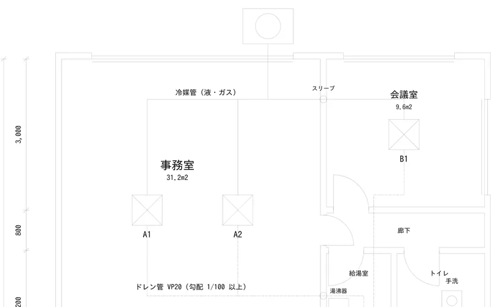

Samples
設備の見本
見本 2点 ／ 画像を押すと、PDF または立体のページが開きます。
ご注意掲載している見本は、対応できる内容の一例として作った提案例です。実際のご依頼では、いただいた図面・資料をもとに、内容に合わせてさらに作り込んだ品質でお納めします。
設備の図面
2点
 2D図面
2D図面
No.01 通信設備／配置図・構造図
屋上基地局 アンテナ配置図・構造図
- どんな資料か
- ビル屋上に通信の基地局を新設する工事の、アンテナ配置図と、アンテナを支えるポール架台の構造図です。
- 使う場面
- 屋上に機器や架台を置く工事で、配置・配線ルートと架台の形・部材を、施工者と共有するとき。
- 入っている内容
- 屋上平面図・アンテナ配置図（1/100）は、通り芯と寸法、3セクタのアンテナと方位角（30°・150°・270°）、ケーブルラック、屋外キャビネット、接地線、凡例と機器表（10行）。構造図はポール架台の立面図・平面図（1/20）とベース詳細（1/10）、部材表（長さ・数量・質量、合計 約421kg）、アンテナ設置諸元の表。
- 納める形式

2D図面
No.02 空調・給排水衛生／平面図・機器表
テナント事務所 空調・給排水衛生設備 平面図
- どんな資料か
- テナント事務所（事務室・会議室・給湯室・トイレ）の、空調と給排水衛生の設備平面図と機器表です（ZCADで作図）。
- 使う場面
- 事務所の入居工事などで、室内機の位置と配管のルートを決め、機器の能力の目安を確かめるとき。
- 入っている内容
- 平面図（1/40）に天井カセット形の室内機3台と室外機、冷媒管・ドレン管（勾配1/100以上）、給水・排水の経路、壁・床の貫通（スリーブ）、凡例と特記。2枚目は機器表（7行：符号・能力・設置場所・備考）と、床面積と単位負荷から出した概算の冷房負荷の表。
- 納める形式
電気設備図からの数量拾いの見本（色分け図面・数量表・部材表）は、建築・土木のページに載せています。